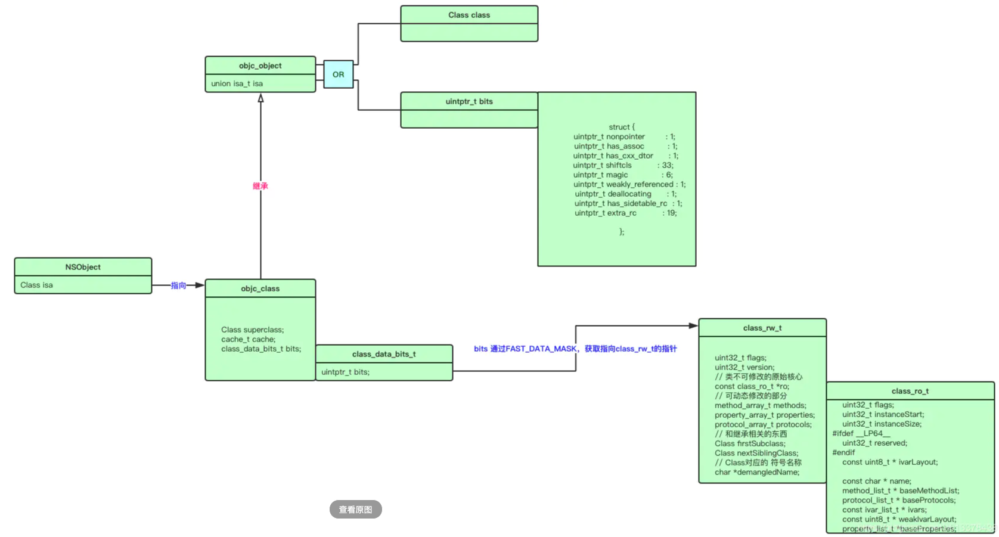
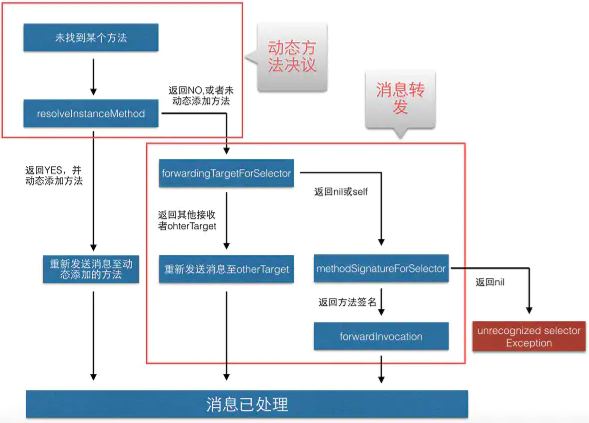
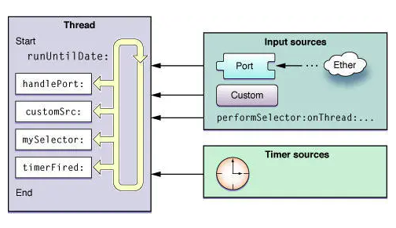

Objective-C
资料
- Objective-C 中 nullable、__nullable、_Nullable 的区别
- 黑幕背后的Autorelease
- NSHipster attribute
- iOS底层原理：weak的实现原理、探秘Weak实现原理
- OC中参数类型定义
- ARC 实现的原理
- 简谈 OC 中陌生而又熟悉的 super：
super是一个关键字，给super发消息实际上是一种调用继承链上父类实现的方法的方式
语法
所有权
ARC下支持如下4种所有权：
- __strong
- __weak
- __unsafe_unretained
- __autoreleasing (修饰当前变量，可以在当前autorelease pool结束时自动释放)
const的位置
C++里 const int* 与 int const* 有什么区别？
@import
#include、#import 和 @import 的区别
- 不需要像 #import 一样得手动去链接 Framework，@import 会自动去链接
- @import 工作方式和 PCH 很像，但是 @import 要比 PCH 的效率高出许多
- @import 导入 Modul 优化文件体积变大、编译速度变慢的问题
- 可以部分导入（@import Framework.A）或全部导入（@import Framework）
Clang Attributes
KVC / KVO
KVC: Key Value Coding，即可以通过Key来访问属性的机制：
-(void)setValue:(id)value forKeyPath:(NSString *)keyPath;
-(void)setValue:(id)value forKey:(NSString *)key;
-(id)valueForKeyPath:(NSString *)keyPath;
-(id)valueForKey:(NSString *)key;
KVO的核心原理是：iOS系统会修改这个对象的isa指针，改为指向一个全新的通过Runtime动态创建的子类，子类拥有自己的set方法实现，set方法实现内部会顺序调用willChangeValueForKey方法、原来的setter方法实现、didChangeValueForKey方法，而didChangeValueForKey方法内部又会调用监听器的observeValueForKeyPath:ofObject:change:context:监听方法。
Block
Block本质是OC对象，内部也包含isa指针，以及一个函数指针，指向真正的block执行代码。
Runtime
- 无忘无往的文章列表：对Runtime讲解的非常清晰易读
- SEL类型数据和selector的用法：SEL就是方法的包装，包含了调用地址
- 深入理解 Objective-C：方法缓存
- Runtime消息转发
- objc-runtime | objc4：可以调试的objc-runtime源代码
- 【iOS 14】Objective-C Runtime 的优化
特点
将一些在编译和链接过程中的工作，放到了运行阶段。
- 可以运行时新增类、方法、属性等
- 可以运行时交换两个方法
- 获得某个类所有成员方法、成员变量
- 可以通过
objc_copyClassList或objc_getClassList获取所有已注册的类 (系统类有很多，在Demo中得到2W多个类) (runtime使用篇: objc_getClassList 和 objc_copyClassList) - 运行时库跟系统是绑定的，也即不同系统上，其实现可能是不同的
Hook
Hook手段：
Method Swizzle(class_replaceMethod、method_exchangeImplementations)fishhook
fishhook仅可以hook系统的c接口。
反Method Swizzle Hook原理：使用fishhook修改method_exchangeImplementations指向自己的接口，在自己的接口中进行判断。
分类
-
分类中的同名函数，是会覆盖原类的函数。
-
调用优先级：分类(category) > 本类 > 父类
-
如果两个扩展中，存在同名函数，则后编译的生效 (Category同名方法执行顺序)
-
通过
class_addMethod添加的方法，往往是最后添加的，其一般会最先调用 -
如果希望所有的同名函数都可以被调用到，可以通过
class_copyMethodList拿到所有的函数，然后逐渐调用同名的接口。(该方法返回的顺序，就是调用查找的顺序) -
class_copyMethodList只会获取当前类的方法列表，父类的方法列表不会返回
对象 & 类实现
所有的类、元类，都是运行时创建的。
- 普通@interface定义的对象，都是从NSObject继承的。其存在一个属性，即
Class isa。 Class类型，是struct objc_class的定义objc_class继承自objc_objectobjc_class中有三个成员Class superclass指向父类cache_t cache优化方法调用的cacheclass_data_bits_t bits标明Class的属性的
objc_object是Runtime层的对象。而类是一种特殊的对象，即对象的继承对象 (OC中id类型也是定义为该结构体类型)objc_object仅有一个isa_t isa属性isa_t是一个联合体，可能描述了对象的属性，也可能指向了一个类- 元类不是父类
示意图：（来源https://www.jianshu.com/p/b42db8b06088）
关键对象实现
struct objc_object {
Class _Nonnull isa OBJC_ISA_AVAILABILITY;
};
struct objc_class : objc_object {
Class superclass;
cache_t cache; // 方法列表的缓存，调用过的方法会存储在这儿
class_data_bits_t bits; // 要找函数、属性等数据，要通过该字段获取
...
}
struct class_data_bits_t {
friend objc_class;
// Values are the FAST_ flags above.
uintptr_t bits;
// 返回的class_rw_t中，包含了方法列表
class_rw_t* data() const {
return (class_rw_t *)(bits & FAST_DATA_MASK);
}
...
}
// https://www.jianshu.com/p/823eaedb3697
// class_rw_t和class_ro_t的专门解释
// class_rw_t存储的方法、属性等，是在运行时动态生成或变化的
struct class_rw_t {
// Be warned that Symbolication knows the layout of this structure.
uint32_t flags;
uint16_t witness;
#if SUPPORT_INDEXED_ISA
uint16_t index;
#endif
explicit_atomic<uintptr_t> ro_or_rw_ext;
Class firstSubclass;
Class nextSiblingClass;
using ro_or_rw_ext_t = objc::PointerUnion<const class_ro_t, class_rw_ext_t, PTRAUTH_STR("class_ro_t"), PTRAUTH_STR("class_rw_ext_t")>;
const ro_or_rw_ext_t get_ro_or_rwe() const {
return ro_or_rw_ext_t{ro_or_rw_ext};
}
// 返回指向的class_ro_t结构
const class_ro_t *ro() const { ... }
// 返回指向的class_rw_ext_t结构
class_rw_ext_t *ext() const { ... }
// 返回方法列表 (其实是去class_rw_ext_t和class_ro_t结构中读取)
const method_array_t methods() const {
auto v = get_ro_or_rwe();
if (v.is<class_rw_ext_t *>()) {
return v.get<class_rw_ext_t *>(&ro_or_rw_ext)->methods;
} else {
return method_array_t{v.get<const class_ro_t *>(&ro_or_rw_ext)->baseMethods()};
}
}
// 属性列表
const property_array_t properties() const { ... }
// 协议列表
const protocol_array_t protocols() const { ... }
}
// 编译期就已经决定好的了，运行时不会修改 (存储在clean memory中)
struct class_ro_t {
uint32_t flags;
uint32_t instanceStart;
uint32_t instanceSize;
#ifdef __LP64__
uint32_t reserved;
#endif
const uint8_t * ivarLayout;
const char * name;
WrappedPtr<method_list_t, PtrauthStrip> baseMethodList;
protocol_list_t * baseProtocols;
const ivar_list_t * ivars;
const uint8_t * weakIvarLayout;
property_list_t *baseProperties;
...
};
// iOS14中新增的类型，为了优化内存
// https://huang-libo.github.io/posts/Objective-C-Runtime-Changes-in-iOS-14
struct class_rw_ext_t {
DECLARE_AUTHED_PTR_TEMPLATE(class_ro_t)
class_ro_t_authed_ptr<const class_ro_t> ro;
method_array_t methods;
property_array_t properties;
protocol_array_t protocols;
char *demangledName;
uint32_t version;
};
struct method_t {
static const uint32_t smallMethodListFlag = 0x80000000;
method_t(const method_t &other) = delete;
// 核心数据
struct big {
SEL name;
const char *types;
MethodListIMP imp; // 就是IMP类型，该地址就是该函数的实现，https://www.jianshu.com/p/27ee04f3ed7b 中有示例
};
}
// method_array_t，是一个二维数组，存放了方法列表的数组
class method_array_t :
public list_array_tt<method_t, method_list_t, method_list_t_authed_ptr>
{
typedef list_array_tt<method_t, method_list_t, method_list_t_authed_ptr> Super;
public:
method_array_t() : Super() { }
method_array_t(method_list_t *l) : Super(l) { }
const method_list_t_authed_ptr<method_list_t> *beginCategoryMethodLists() const {
return beginLists();
}
const method_list_t_authed_ptr<method_list_t> *endCategoryMethodLists(Class cls) const;
};
// Category生成的结构。这个结构数据，会在运行时被runtime合入到class_rw_t中(或class_rw_ext_t)
struct category_t {
const char *name;
classref_t cls;
WrappedPtr<method_list_t, PtrauthStrip> instanceMethods;
WrappedPtr<method_list_t, PtrauthStrip> classMethods;
struct protocol_list_t *protocols;
struct property_list_t *instanceProperties;
// Fields below this point are not always present on disk.
struct property_list_t *_classProperties;
...
};
其它对象
PointerUnion：联合体指针，期内存储的值要么A，要么B (两个值互斥的情况使用)list_array_tt，可以用来存储一维或二维数组数据。(list_array_tt 结构详解)
消息/方法
- SEL定义为
struct objc_selector（目前仅是一个字符串，苹果将其实现隐藏了） - 不同类的同名方法（即使参数不同），它们的SEL也是相同的
sel_isEqual可以用来判断两个SEL是否相同@selector及sel_registerName可以获取SEL方法选择器- IMP实际上是一个函数指针
- 在cache中存的是
method_t类型，里面包含了SEL和IMP class_copyMethodList只会获取当前类的方法列表，父类的方法列表不会返回super会从继承链上找父类的方法实现，然后进行调用objc_msgSend可以直接调用某个类的某个方法 (id objc_msgSend(id self, SEL _cmd, ...))objc_msgSendSuper可以直接调用某个父类的方法- 消息调用时，会优先从
objc_class的cache_t中查找方法。
消息调用示意图：（来源：https://www.jianshu.com/p/782d7ce86d0f）

消息调用流程
- 实例对象通过isa找到它的类对象
- 在类对象的缓存方法列表中寻找指定方法
- 如果缓存中没有，就到当前类的方法列表中寻找
- 如果方法列表中没有，就通过superclass到父类的方法列表中寻找
- 如果父类方法类别也没有，那么就动态解析（Method Resolution）
- 如果消息解析后还没找到，那么就消息转发（Method Forwarding）
- 如果还是没找到，程序就崩溃，如果2~6步骤中有一个找到，则返回对应的函数实现（IMP）
类方法的调用类似，但是是会去元类中找
动态解析，需要重写NSObject的resolveInstanceMethod来实现
消息转发，可以分两步处理：
- 先调用
forwardingTargetForSelector，返回可以处理的对象 - 上面不响应，则调用
methodSignatureForSelector，返回函数签名，然后调用forwardInvocation
流程参考：

Runloop
是一个运行循环，有事情时处理事情，没有事情时休眠。
作用：
- 保持程序的持续运行g
- 处理各种事件
- 节省CPU资源，提高程序性能
特点：
- 一个线程对应一个Runloop
- 子线程Runloop的创建是发生在第一次获取时，Runloop的销毁是发生在线程结束时
- 一个Runloop中包含多个Mode
- 每个Mode包含若干个Source/Timer/Observer
Source主要用来跟其它线程互发消息使用
Observer可以监听：即将进入loop、即将处理timer、即将处理Source、即将进入休眠、刚从休眠中唤醒、即将退出loop这些事件。
performSelector:异步执行某个接口时，其实现也是通过添加timer来做的。
Runloop类型：
- NSDefaultRunLoopMode：默认的模式
- UITrackingRunLoopMode：界面跟踪，用于scrollView拖拽滑动
- NSRunLoopCommonModes：综合模式
示意图：（来源：https://www.jianshu.com/p/d8c3a65b6e19）
Timer与Runloop结合的使用：
- 子线程中启动Timer，需要手动将其加入到当前runloop中
- 如果当前线程的runloop还没有启动过，还需要调用一下
run接口 - 子线程释放Timer也需要注意，
timer.invalidate()的调用线程要与Timer的创建线程是同一个
其它
+load 顺序
- 动态库
+load最优先执行- 跟加载顺序有关系
- 主应用内
+load其次执行- 跟文件编译顺序有关系
- 静态库
+load最后执行- 跟文件编译顺序有关系
具体类的load加载顺序：
- Super Class Load
- Sub Class Load (多个Sub Class，哪个在Compile Sources排前面哪个先编译)
- Category Class Load (与是否父类子类无关，完全由Compile Sources顺序决定，哪个排前面哪个先加载)
OC动态性
要给一个类动态添加方法有如下两种办法：
- 通过Category来扩展 (Category与Extension是不一样的，Category是运行时添加的，而Extension是编译期确定的)
- 通过
class_addMethod添加 (如果存在同名的方法，会返回false)
Tagged Pointer
Apple为了优化NSNumber、NSString等小对象所占用的空间，提供了该技术。在该技术实现中也考虑到缓冲区溢出等保护。
Tagged Pointer在存储时，也会对数据进行混淆。混淆的方式，即是通过生成的随机数作为因子。具体可参考：你不知道的TaggedPointer
在苹果的64位OC实现中，若对象指针的二进制第一位是1，则该指针为Tagged Pointer。 例如0xa000000000000311其中a的2进制为1010,第一位1表示这是Tagged Pointer，010表示这是一个NSTaggedPointerString类；这个地址最后一位表示字符串的数目，这里是0001表示有1位字符串；其中真正用来存储的位数只有中间的14位16进制。这个地址本身其实就存储了字符串的值，可以说是存储在&strS内存中值，只是伪装成了地址，它不需要存储在数据区，也不需要申请堆空间。
Tagged Pointer的实现也经过了多次修改，目前最新的实现中，那个标识放在了最低位。
NSInvocation使用
关于NSInvocation，有如下特点：
- 如果方法有2个参数，但调用时，只传一个参数，则第2个参数会给赋值默认值，并不会出异常 (比如NSString类型，拿到的就是nil，Int类型就是0)
- 如果方法有2个参数，但调用时传了3个参数，则会产生
NSInvalidArgumentException的异常
Swizzing特点
- 一个普通的OC方法，可以与可变参数的OC方法进行交换的。(但交换完，处理逻辑不好处理)